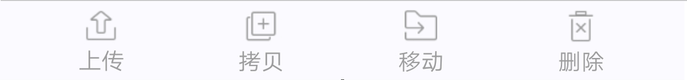
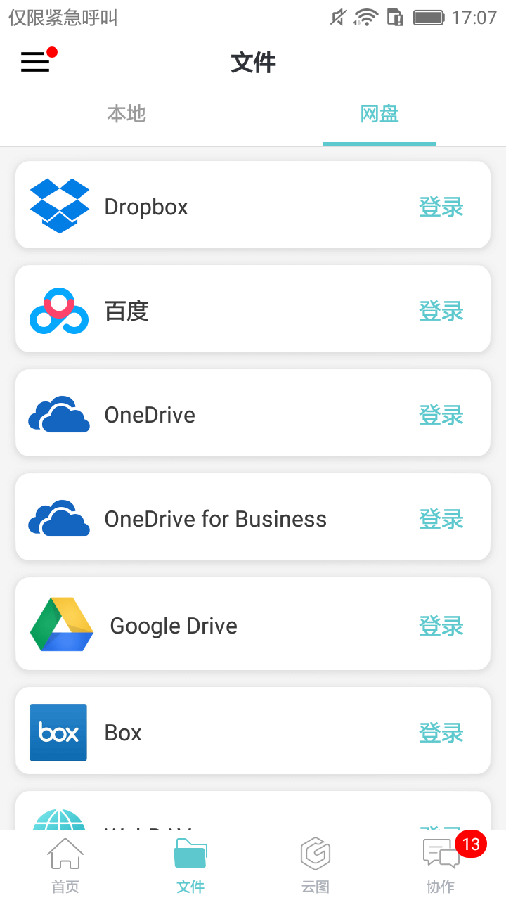

文件有“本地”和“网盘”两个标签页。左上角为“菜单”图标，点击可进入左侧菜单。
该页相关操作
批量操作：点击右上角
 “编辑”按钮，可对本地文件及文件夹进行以下相关操作。
“编辑”按钮，可对本地文件及文件夹进行以下相关操作。

 上传：支持将本地文件上传至“云图”或“网盘”账户。
上传：支持将本地文件上传至“云图”或“网盘”账户。
操作步骤：
(1) 点击右上角 “编辑”按钮；
“编辑”按钮；
(2) 选择要上传的文件；
(3) 点击 “上传”按钮；
“上传”按钮；
(4) 选择要上传的云图或网盘类型（如未登录，此时可先登录后再上传）；
(5) 选择文件存放位置（如需新建文件夹，可点击右上角的
 “新建文件夹”按钮添加）；
“新建文件夹”按钮添加）；
(6) 点击“确定”完成上传；
 移动/
移动/
 拷贝：支持将当前目录下的一个或多个文件移动或拷贝到另一个任意目录下。
拷贝：支持将当前目录下的一个或多个文件移动或拷贝到另一个任意目录下。
操作步骤：
(1) 点击右上角的 “编辑” 按钮；
“编辑” 按钮；
(2) 选择要移动/拷贝的文件；
(3) 点击 “ 移动/
移动/ 拷贝”按钮；
拷贝”按钮；
(4) 选择文件存放位置（如需新建文件夹，可点击右上角的
 “新建文件夹” 按钮添加）；
“新建文件夹” 按钮添加）；
(5) 点击 “确定” 完成移动/拷贝。
 删除：可删除选中文件。
删除：可删除选中文件。
选择文件后，再次点击
 “编辑” 按钮为取消选择。
“编辑” 按钮为取消选择。
筛选：根据文件格式进行筛选。
排序：按照时间，大小，名称或类型对文件进行排序。
 新建文件夹：在当前目录下新建一个文件夹。
新建文件夹：在当前目录下新建一个文件夹。
 搜索：在当前页搜索满足条件的文件。
搜索：在当前页搜索满足条件的文件。
 缩略图模式：文件以缩略图模式显示。
缩略图模式：文件以缩略图模式显示。
 列表模式：文件以列表模式显示。
列表模式：文件以列表模式显示。
路径：显示当前文件路径。可点击文件路径中的文件夹名称进入该文件夹。
 文件详情：显示该文件的详细信息，包括文件名，类型，大小，位置，时间，和与文件相关的操作，例如：共享聊图、分享，上传，收藏/取消收藏，重命名，拷贝、移动、删除等。还可点击该页右上角的 “打开” 按钮打开该文件。
文件详情：显示该文件的详细信息，包括文件名，类型，大小，位置，时间，和与文件相关的操作，例如：共享聊图、分享，上传，收藏/取消收藏，重命名，拷贝、移动、删除等。还可点击该页右上角的 “打开” 按钮打开该文件。
点击操作：点击文件名即可打开该文件。
长按操作：长按文件，显示与文件相关的操作，包括分享，上传，收藏/取消收藏，重命名，拷贝、移动、删除，详情，取消等。
向下拖动操作：向下拖动为刷新操作。
2.1 选择网盘
支持的网盘类型有：Dropbox，百度网盘，OneDrive， OneDrive for Business， Google Drive，Box和WebDav。

用户可登录网盘账户，下载浏览网盘文件。支持本地图纸上传至网盘，网盘图纸下载到本地。
2.2 添加网盘
2.2.1 Dropbox
绑定步骤：
（1）点击Dropbox网盘后的 “登录” 按钮，初次使用需绑定Dropbox账号；
（2）弹出 “登录Dropbox以关联‘GStarCAD’” 界面，正确填写登录信息后点击 “登录” ，提示：“GStarCAD想要访问它在Dropbox中的文件和文件夹”, 点击 “允许”；
（3）弹出对话框提示：在 “CAD 看图王”中打开？点击 “打开”按钮完成；
上传和下载文件步骤：
（1）在Dropbox网站或客户端登录已绑定的账号，上传图纸文件到Dropbox中；
（2）在CAD 看图王中点击已绑定的Dropbox网盘即可下载和编辑已上传的文件。
2.2.2 百度网盘
绑定步骤：
（1）点击百度网盘后的 “登录” 按钮，初次使用需绑定百度网盘账号；
（2）弹出 “登录百度账号” 界面，正确填写登录信息后点击 “登录并授权” 完成绑定；
上传和下载文件步骤：
（1）以在浏览器中登录百度网盘为例：输入登录信息后，点击 “我的应用数据”，打开 “GstarCAD_Android” 文件夹，点击 “上传”，可将图纸从本地上传到网盘；
（2）在移动端点击百度网盘可显示已上传的图纸。点击文件名开始下载，下载完成后自动打开文件。
2.2.3 OneDrive
绑定步骤：
（1）点击OneDrive网盘后的 “登录” 按钮，初次使用需绑定OneDrive网盘账号；
（2）弹出 “登录” 界面，正确填写登录信息后提示：“是否允许此应用访问你的信息”,点击 “是” 完成绑定；
上传和下载文件步骤：
（1）电脑端登录OneDrive账号，打开 “文件”，点击 “上载/文件”，将本地图纸上载到 “OneDrive/文件”目录下;
（2）在移动端点击已绑定的OneDrive网盘即可开始下载和编辑文件。
2.2.4 OneDrive for Business
绑定步骤：
（1）点击OneDrive for Business网盘后的 “登录” 按钮，初次使用需绑定OneDrive for Business网盘账号；
（2）弹出 “登录” 界面，正确填写账户信息后即可登录；
上传和下载文件步骤：
（1）电脑端登录OneDrive for Business账号，打开 “OneDrive”，点击 “上传”，将本地图纸上载到根目录下;
（2）在移动端点击已绑定的OneDrive for Business网盘即可开始下载和编辑文件。
2.2.5 Google Drive
绑定步骤：
（1）点击Google Drive网盘后的 “登录” 按钮，初次使用需绑定Google Drive账号；
（2）弹出“登录”界面，正确填写登录信息后提示：允许DWG FastView访问您的账号吗？,点击“允许”完成绑定。
上传和下载文件步骤：
（1）电脑端登录Google Drive账号，点击“我的云端硬盘”，选择“上传文件...”可将文件上传到该账号；
（2）在移动端点击已绑定的Google Drive网盘即可开始下载和编辑文件。
2.2.6 Box
绑定步骤：
（1）点击Box网盘后的 “登录” 按钮，初次使用需绑定Box账号；
（2）弹出 “登录 ”界面，正确填写登录信息后，点击 “授权访问Box ”按钮完成绑定；
上传和下载文件步骤：
（1）电脑端登录Box账号，点击右上角“上传”按钮，可将文件上传到该账号；
（2）在移动端点击已绑定的Box网盘即可开始下载和编辑文件。
2.2.7 WebDAV
绑定步骤：
（1）点击WebDAV网盘后的 “登录” 按钮；
（2）正确填写服务器地址，用户名和密码，点击“确定 ”完成；
上传和下载文件步骤：
（1）电脑端登录WebDAV账号，点击“上传”按钮，可将文件上传到该账号；
（2）在移动端点击已绑定的WevDAV网盘即可开始下载和编辑文件。
2.3 网盘目录
该页相关操作
批量操作：点击右上角
 “编辑”按钮，可对当前页面的文件进行以下相关操作。
“编辑”按钮，可对当前页面的文件进行以下相关操作。
同步：当本地文件与服务器上的文件不一致时，点击 “同步” 按钮可实现本地文件和服务器文件自动同步，新版本替换旧版本。
操作步骤：
(1) 点击右上角 “编辑”按钮；
“编辑”按钮；
(2) 选择需要同步的文件；
(3) 点击“同步”按钮；
(4) 弹出显示同步进度的对话框，可点击 “取消” 放弃同步，进度为100%时完成。
 移动：支持将当前目录下的一个或多个文件移动到另一个任意目录下。
移动：支持将当前目录下的一个或多个文件移动到另一个任意目录下。
操作步骤：
(1) 点击右上角的  “编辑” 按钮；
“编辑” 按钮；
(2) 选择要移动的文件；
(3) 点击 “移动” 按钮；
“移动” 按钮；
(4) 选择文件存放位置（如需新建文件夹，可点击右上角的
 “新建文件夹” 按钮添加）；
“新建文件夹” 按钮添加）；
“确定” 完成移动。
 删除：可删除选中文件。
删除：可删除选中文件。
选择文件后，再次点击 “编辑”按钮为取消选择。
“编辑”按钮为取消选择。
筛选：根据文件格式进行筛选。
排序：按照名称，时间，大小或类型对文件进行排序。
 新建文件夹：在当前目录下新建一个文件夹。
新建文件夹：在当前目录下新建一个文件夹。
 搜索：在当前页搜索满足条件的文件。
搜索：在当前页搜索满足条件的文件。
 缩略图模式：文件以缩略图模式显示。
缩略图模式：文件以缩略图模式显示。
 列表模式：文件以列表模式显示。
列表模式：文件以列表模式显示。
路径：显示当前文件路径。可点击文件路径中的文件夹名称进入该文件夹。
文件状态及点击操作：
红色同步：表示本地文件与服务器上的文件不一致，需要同步。点击 “红色同步” 按钮可实现本地文件和服务器文件自动同步，新版本替换旧版本；点击该文件为打开文件。
绿色：表示文件已下载，本地文件与服务器上的文件一致。点击 “绿色” 按钮显示提示信息；点击文件名可直接打开文件。
灰色：表示文件未下载。点击 “灰色” 按钮显示提示信息；点击文件名开始下载，下载完成后自动打开图纸，文件状态由灰色变成绿色。
黄色：表示本地文件与网盘上的文件分别做了更新；点击文件名将打开本地的图纸；点击“黄色”按钮提示可将本地文件备份到 “已下载”/ “冲突文件”文件夹中，将网盘上的文件重新同步到本地。
长按操作：长按文件，显示与文件相关的操作，包括同步，移动，删除，详情和取消。
向下拖动操作：向下拖动为刷新操作。
切换网盘账号或退出登录：点击路径中的 “选择网盘” 跳转到 “网盘” 选择界面，点击网盘名称进行切换，点击已登录网盘后面的 “注销” 按钮退出登录。
2.4 已下载
显示从 “网盘”中下载的文件列表和 “冲突文件”文件夹。
2.4.1该页相关操作
批量操作：点击右上角 “编辑”按钮，可对当前页面中的文件进行以下操作。
“编辑”按钮，可对当前页面中的文件进行以下操作。
 拷贝：支持将当前目录下的一个或多个文件拷贝到另一个任意目录下。
拷贝：支持将当前目录下的一个或多个文件拷贝到另一个任意目录下。
操作步骤：
(1) 点击右上角 “编辑”按钮；
“编辑”按钮；
(2) 选择要拷贝的文件；
(3) 点击 “拷贝”按钮；
“拷贝”按钮；
(4) 选择文件存放位置（如需新建文件夹，可点击右上角的 “新建文件夹” 按钮添加）；
“新建文件夹” 按钮添加）；
(5) 点击 “确定” 完成拷贝。
 删除：可删除选中文件。
删除：可删除选中文件。
选择文件后，再次点击 “编辑” 按钮为取消选择。
“编辑” 按钮为取消选择。
筛选：根据文件格式进行筛选。
排序：按照名称，时间，大小或类型对文件进行排序。
 搜索：在当前页搜索满足条件的文件。
搜索：在当前页搜索满足条件的文件。
 缩略图模式：文件以缩略图模式显示。
缩略图模式：文件以缩略图模式显示。
 列表模式：文件以列表模式显示。
列表模式：文件以列表模式显示。
路径：显示当前文件路径。可点击文件路径中的文件夹名称进入该文件夹。
 文件详情：显示该文件的详细信息，包括文件名，类型，大小，位置，时间，和与文件相关的操作，例如：共享聊图、分享，收藏/取消收藏，拷贝，删除等。还可点击该页右上角的 “打开” 按钮打开该文件。
文件详情：显示该文件的详细信息，包括文件名，类型，大小，位置，时间，和与文件相关的操作，例如：共享聊图、分享，收藏/取消收藏，拷贝，删除等。还可点击该页右上角的 “打开” 按钮打开该文件。
点击操作：点击文件名即可打开该文件。
长按操作：长按文件，显示与文件相关的操作，包括分享，收藏/取消收藏，拷贝，删除，详情和取消。
向下拖动操作：向下拖动为刷新操作。
2.4.2 冲突文件
冲突文件产生的条件：
（1）用户在A和B两台终端设备上登陆同一网盘账号；
（2）下载并修改了同一张图纸；
（3） 其中在A设备上保存了修改结果，并已将其同步到服务器上；
（4） 在B设备上仅保存了修改结果，还未同步。
冲突文件的同步动作：
此时，在B设备中手指下拉刷新列表或重新进入"网盘"，然后点击文件名称后的“红色同步”按钮，将提示用户下载服务器上更新的图纸，本地已修改的图纸将自动移动到“冲突文件”文件夹中。点击 “确定” 开始同步。
冲突文件的编辑：
对 “冲突文件” 中的文件操作与对 “本地/文件列表” 中的文件操作相同（“新建文件夹” 除外，该文件夹内不支持新建文件夹）。
注：离线状态下，点击“网盘”显示“已下载”文件夹，里面包含已下载文件和发生冲突的文件。